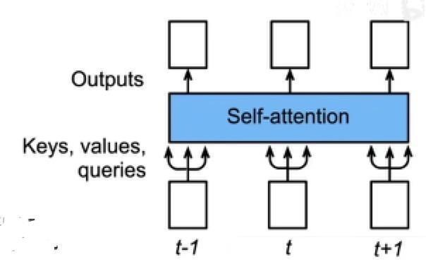
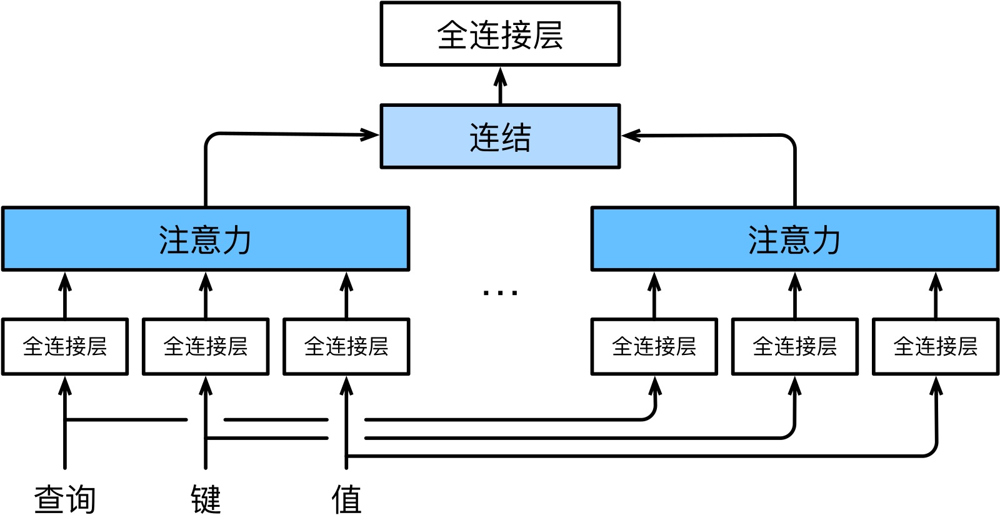
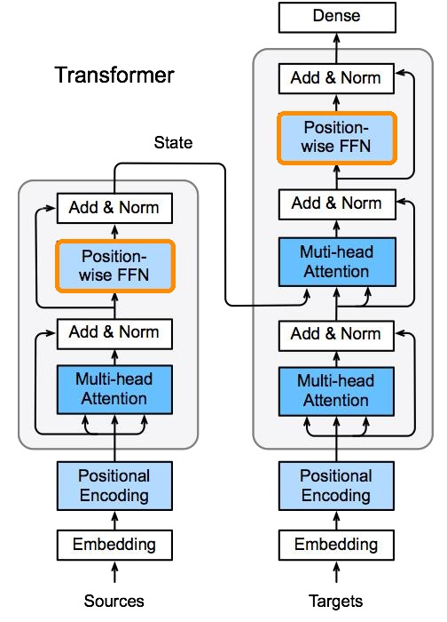
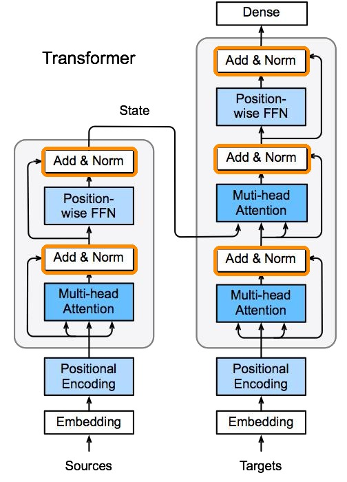
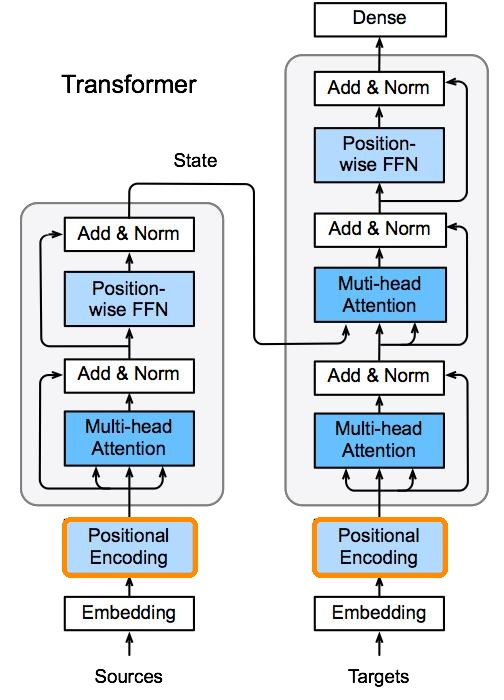

注意力机制与 Transformer
Attention Mechanism & Transformer —— 互动讲义
注意力机制：从心理学到机器学习
注意力是一次"软的、可微分的查表"：查询（query）问每个键（key）"你和我有多相关？"，答案是对值（value）的加权平均。
1.1随意线索与不随意线索
心理学研究表明，生物的视觉系统并不是对视野中的一切平均用力，而是有选择地聚焦。注意力来自两类线索：
- 不随意线索：物体本身的突出性吸引你——桌上红色杯子在一堆灰书里格外显眼，你的目光不自觉地被它抓走；
- 随意线索：任务目标主动引导你——你想读一本书，于是注意力有意识地落在书上，对周围视而不见。


1.2查询、键与值
把两类线索翻译成机器学习语言：此前学的卷积、全连接、池化层都只用了"不随意线索"——输入什么就处理什么，一视同仁。注意力机制首次把随意线索引入网络：
- 查询（query）：随意线索——"我现在想找什么"；
- 键（key）：每个输入自带的"标签"——不随意线索，用来和查询比对；
- 值（value）：每个输入真正的内容。
注意力计算 = 用 query 逐个与 key 比对相似度 → 得到一组权重 → 对 value 做加权平均。相似度高的输入获得更多关注，这就是注意力池化（attention pooling）。

图书馆找书——query 是"我想找深度学习教材"，key 是每本书的书脊标签，value 是书的内容。你和书脊标签一一比对，越匹配的书越被重视，最后抱走的是按匹配度加权的一批书。
注意力池化：从非参数到参数化
最早的注意力池化不需要任何学习参数；给它装上可学习的旋钮，就走到了现代注意力分数函数。
2.1非参数方案：Nadaraya-Watson 核回归
给定数据 \((x_i, y_i)\)，要对查询 \(x\) 做预测：平均池化直接取 \(\frac{1}{n}\sum y_i\) 太粗糙。60 年代提出的 Nadaraya-Watson 核回归按"距离越近权重越大"加权：
$$f(x) = \sum_{i=1}^{n} \mathrm{softmax}\!\Big(-\tfrac{1}{2}(x - x_i)^2\Big)\, y_i$$其中 \(-\frac{1}{2}(x-x_i)^2\) 来自高斯核 \(K(u)=\frac{1}{\sqrt{2\pi}}\exp(-\frac{u^2}{2})\)。把式子拆开看：\(x\) 是 query，\(x_i\) 是 key，\(y_i\) 是 value——核回归就是最早的注意力池化：离查询越近的样本，其值被采纳得越多。

2.2参数化注意力：引入可学习的 w
非参数方案的权重完全由距离决定，不够灵活。在注意力分数里引入可学习参数 \(w\)，让模型自己学会"什么样的相似才重要"：
$$f(x) = \sum_{i=1}^{n} \mathrm{softmax}\!\Big(-\tfrac{1}{2}\big((x - x_i)\, w\big)^2\Big)\, y_i$$多了参数 \(w\)，模型就能通过训练调整不同特征维度的重要程度——这是从"核回归"走向"可学习注意力"的第一步。
2.3注意力分数的两种主流设计
query 与 key 的"相似度"称为注意力分数（attention score），分数经 softmax 归一化就是注意力权重。两种最常用的分数函数：
| 分数函数 | 公式 | 特点 |
|---|---|---|
| 加性注意力 | \(a(\mathbf{q}, \mathbf{k}) = \mathbf{w}_v^\top \tanh(W_q \mathbf{q} + W_k \mathbf{k})\) | query 和 key 维度可以不同；有一个小 MLP，表达力强 |
| 缩放点积注意力 | \(a(\mathbf{q}, \mathbf{k}) = \mathbf{q}^\top \mathbf{k} / \sqrt{d_k}\) | 只需一次矩阵乘法，快；要求 q、k 同维；除以 \(\sqrt{d_k}\) 防止 softmax 饱和 |

为什么除以 \(\sqrt{d_k}\)？维度 \(d_k\) 越大，点积的量级越大，softmax 会被推到接近 0/1 的饱和区，梯度趋近 0。除以 \(\sqrt{d_k}\) 把分数的方差拉回 1 附近，训练才稳定。这个小细节是 Transformer 能训练起来的关键之一。
Seq2Seq 中的注意力
生成每个目标词时，真正相关的往往只是源句中的某几个词——注意力让解码器每一步都能"回头看"并自动对焦。
3.1动机：翻译时该"看"哪里？
编码器—解码器（seq2seq）模型做机器翻译时，编码器把整句源语压缩成一个固定向量，解码器只凭这一个向量逐词生成译文。问题在于：一个向量装不下长句的全部细节，也无法表达"当前该对齐源句哪个位置"。注意力机制正好补上这一课。翻"hello world → bonjour le monde"时，生成 "bonjour" 主要该看 "hello"。

3.2加入注意力的 seq2seq
Bahdanau 等人 2014 年的经典方案：
- 编码器 RNN 每个时间步的输出都保留下来，作为 key 和 value（一座"记忆库"）；
- 解码器 RNN 上一时刻的隐含状态作为 query；
- 每个解码时刻做一次注意力池化，从记忆库中取出"此刻最相关"的源句信息，与当前词的嵌入拼接后再送入解码器 RNN。


译文词（点击选择 query）
源句词上的注意力权重
注意力让解码器每一步都能"回头看"整个源句并自动对焦，长句翻译质量大幅提升——固定向量的瓶颈被打破，"对齐"也第一次变得可见。
自注意力（Self-Attention）
把同一个序列的每个位置同时复制成 query、key、value 三份，让每个位置都去关注整个序列。
4.1自己关注自己
注意力不一定是"一个序列查询另一个序列"。自注意力中，给定序列 \(\mathbf{x}_1, \ldots, \mathbf{x}_n\)，输出等长的 \(\mathbf{y}_1, \ldots, \mathbf{y}_n\)：
$$\mathbf{y}_i = f\big(\mathbf{x}_i,\ (\mathbf{x}_1, \mathbf{x}_1), \ldots, (\mathbf{x}_n, \mathbf{x}_n)\big) \in \mathbb{R}^{d}$$每个 \(\mathbf{y}_i\) 都融合了全序列与 \(\mathbf{x}_i\) 最相关的信息。例如句子"动物没有过河，因为它太累了"中，"它"的表示可以从"动物"处获得大权重——指代关系被自动建立。

4.2与 CNN、RNN 对比

| CNN | RNN | 自注意力 | |
|---|---|---|---|
| 计算复杂度（每层） | \(O(k \cdot n \cdot d^2)\) | \(O(n \cdot d^2)\) | \(O(n^2 \cdot d)\) |
| 并行度 | \(O(n)\) | \(O(1)\)（必须串行） | \(O(n)\) |
| 最长路径 | \(O(n/k)\) | \(O(n)\) | \(O(1)\) |
"最长路径"指序列中任意两个位置交换信息要经过多少步——它决定了长距离依赖的难易。自注意力任意位置一步可达、又可全并行，代价是 \(O(n^2)\) 的计算量（序列特别长时成为瓶颈）。
RNN 像排队传话，队尾的话要一个一个传过来；自注意力像开会，每个人直接和所有人对话——效率高了，但人太多（序列太长）时会场也会拥挤。
Transformer：完全建立在注意力上的架构
2017 年《Attention Is All You Need》干脆彻底抛弃循环与卷积，只用注意力搭建整个模型。逐块拆解这座大厦。
5.1自注意力机制：并行，但丢失顺序
自注意力要用 \(n\) 个输入生成 \(n\) 个输出，做法是把每个输入同时复制为键、值和查询。这带来两个直接影响：
- 不保留顺序信息：每个位置的输出只跟随词本身，与它在序列中的位置无关（置换不变性）；
- 可以并行计算：\(n\) 个输出之间没有先后依赖，不像 RNN 必须逐个时间步串行展开。

5.2Transformer 模型架构
Transformer 仍然是编码器—解码器架构，但循环层被整个换掉。注意力集中在 3 个地方：
- 编码器自注意力：源句内部互相关注，理解上下文；
- 解码器自注意力：已生成的目标词互相关注（带掩码，不能偷看未来）；
- 编码器—解码器注意力：解码器拿 query 去查询编码器的输出（对齐源句），编码器状态传递到解码器的每一块。

5.3多头注意力机制
一次注意力只能在一个表示空间里找相似。多头注意力把 query、key、value 用 \(h\) 组不同的线性投影变换到 \(h\) 个子空间，各自独立做注意力，再把结果拼接后做一次投影：
$$\mathbf{o}^{(i)} = \mathrm{attention}\big(W_q^{(i)} \mathbf{q},\ W_k^{(i)} \mathbf{k},\ W_v^{(i)} \mathbf{v}\big),\quad i = 1, \ldots, h$$ $$\mathbf{o} = W_o \begin{bmatrix} \mathbf{o}^{(1)} \\ \vdots \\ \mathbf{o}^{(h)} \end{bmatrix}$$
5.4位置前馈网络（Position-wise FFN）
每个变换器块里还有一个位置前馈网络，它对每个位置独立地过同一个两层 MLP。按讲义里的等价视角来看它的计算：
- 将输入（批量大小，序列长度，特征集大小）重新整形为（批量 × 序列长度，特征集大小）；
- 用两层 MLP 变换；
- 再转换回 3-D 形态；
- 这等价于应用两个 \(1 \times 1\) 卷积层。

5.5添加与归一化（Add & Norm）
每个子层外面都包着"Add & Norm"：残差连接（输出 = 子层输出 + 原始输入，保证深层堆叠时梯度畅通）加层归一化（Layer Norm）。层规范类似于批量规范（Batch Norm），区别在于：
- 平均值和方差是沿最后一个维度计算的：
X.mean(axis=-1)； - 而批量归一化是沿第一个批次维度计算的：
X.mean(axis=0)。


5.6位置编码：把顺序"注入"模型
5.1 说过自注意力本身不含顺序信息，解决办法是手工构造"位置签名"加到嵌入上。假设嵌入 \(X \in \mathbb{R}^{l \times d}\)，创建同样形状的位置编码矩阵 \(P \in \mathbb{R}^{l \times d}\)：
$$P_{i,\,2j} = \sin\!\big(i / 10000^{2j/d}\big), \qquad P_{i,\,2j+1} = \cos\!\big(i / 10000^{2j/d}\big)$$第 \(i\) 个位置、第 \(2j\) 维是 sin、第 \(2j+1\) 维是 cos，不同维度频率不同：低维变化快（区分邻近位置），高维变化慢（标记长距离）。输出 = \(X + P\)，顺序信息就这样"混进"了表示。


5.7预测：带掩码的自注意力
在时刻 \(t\) 预测时有个陷阱：如果自注意力能看到整个目标序列，第 \(t\) 个位置就能"偷看"答案本身——模型学会抄答案而非预测。解决办法是掩码（mask）：
- 用之前输入的键和值（位置 \(1 \sim t-1\)）；
- 时刻 \(t\) 的输入作为查询（以及键和值），来预测输出；
- 未来位置的注意力分数被置为 \(-\infty\)，softmax 后权重为 0。

BERT：预训练时代的开幕
拿 Transformer 的编码器，在 30 亿单词上预训练，下游任务只加一个输出层——NLP 从此进入"预训练 + 微调"时代。
6.1NLP 中的迁移学习
计算机视觉早已习惯"预训练 + 微调"：用在 ImageNet 上练好的网络提取特征，新任务只训一个小分类头。NLP 中的迁移学习也是同样的三步：
- 使用预先训练的模型（例如 word2vec 或语言模型）为新任务提取单词/句子特征；
- 通常不更新预训练模型的权重；
- 再构建一个新模型来捕获新任务所需的信息。
但早期的预训练表示有两个短板：word2vec 忽略顺序，且同一个词在任何语境下向量都一样（"苹果"不分水果和公司）；语言模型只看单一方向，看不到后文。NLP 需要一种能真正理解双向上下文的预训练模型。
6.2BERT 的动机与架构
2018 年 Google 提出 BERT（Bidirectional Encoder Representations from Transformers）：拿 Transformer 的编码器（没有解码器），在超过 30 亿单词的书籍和维基百科语料上预训练，让模型充分吸收语言知识；下游任务只需在顶部加一个简单的输出层做微调：

| 版本 | Transformer 块数 | 隐含大小 | 注意力头数 | 参数量 |
|---|---|---|---|---|
| BERT-Base | 12 | 768 | 12 | 1.1 亿 |
| BERT-Large | 24 | 1024 | 16 | 3.4 亿 |
因为编码器是双向的（每个位置能看到整句），BERT 的上下文表示远优于单向语言模型，一经发布就横扫 11 项 NLP 基准任务。它的预训练任务也颇有创意——掩码语言模型（随机遮住 15% 的词让模型猜，类似完形填空）和下一句预测。
Transformer（2017）→ BERT（2018，编码器路线，理解任务）→ GPT 系列（解码器路线，生成任务）→ ChatGPT/大语言模型时代。我们今天站在的"大模型"潮头，技术地基正是本讲的注意力机制。
本讲小结与自测
7.1知识要点回顾
| 主题 | 必须掌握的内容 |
|---|---|
| 注意力的三个角色 | query（随意线索）、key（比对标签）、value（内容）；注意力 = 加权汇聚 |
| 注意力池化 | Nadaraya-Watson 核回归是最早的非参数注意力；参数化引入可学习 \(w\) |
| 分数函数 | 加性注意力（可不同维）vs 缩放点积（快，除以 \(\sqrt{d_k}\) 防饱和） |
| seq2seq+注意力 | 编码器每步输出作 key/value，解码器状态作 query；解决固定向量瓶颈与对齐 |
| 自注意力 | 同一序列充当 q/k/v；任意位置一步直达、全并行；复杂度 \(O(n^2 d)\) |
| Transformer | 三处注意力；多头 = 多角度并行关注；FFN 逐位置变换；Add & Norm；位置编码注入顺序；解码器因果掩码 |
| BERT | Transformer 编码器 + 掩码语言模型预训练 + 微调；Base 1.1 亿 / Large 3.4 亿参数 |
7.2课堂自测
7.3课程后续
至此，从 MLP、CNN、RNN 到 Transformer 的核心模型体系已经完整。后续将把这些部件用于两大应用方向——计算机视觉（第 07 章）与自然语言处理（第 08 章），并最终汇聚到大语言模型（LLM）的原理与实践中。